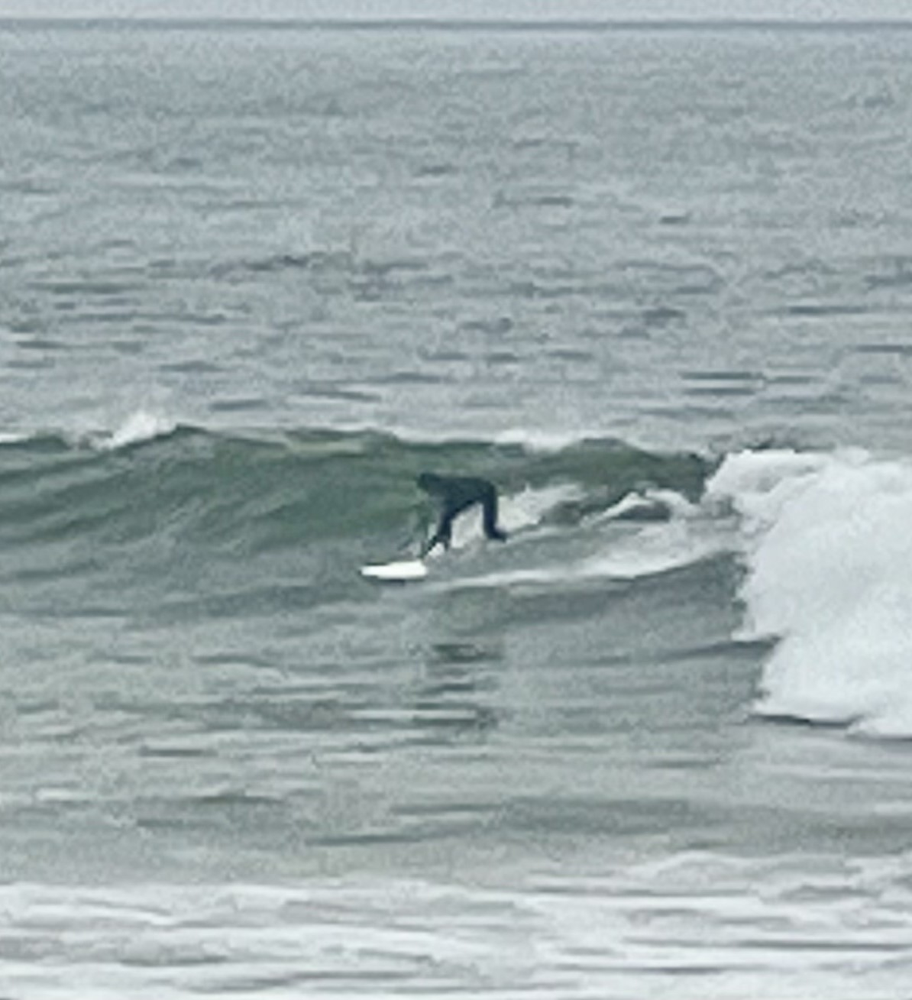

<html lang="en"></html>
<head>
    <meta charset="UTF-8">
    <meta name="viewport" content="width=device-width, initial-scale=1.0">
    <title>DJ DP</title>

    <!-- FONT -->
     <link href="">

    <link rel="stylesheet" href="https://unicorns.iconscout.com/release/v4.0.0/css/line.css">

    <link rel="stylesheet" href="style.css">
</head>
<body>
    <nav>
        <div class="container nav__container">
            <a href="index.html" class="nav__logo"></a>
            <ul class="nav__links">
                <li><a href="#">Comienzo</a></li>
                <li><a href="#about">De mi</a></li>
                <li><a href="#galería">Gallería</a></li>
                <li><a href="#exhibition">Exhibitiónes</a></li>
            </ul>
            <ul class="nav__socials">
                <li><a href="https://www.linkedin.com/in/derek-murchison-375029199" target="_blank"></a></li>
                <li><a href="https://www.instagram.com" target="_blank"><i class="uil uil-instagram-alt"></i></a></li>
                <li><a href="index.html" target="_blank"></a></li>
            </ul> <!--https://murchison.cargo.site/spanish-->

        </div>
    </nav>


    <header>
        <div class="container header__container">
            <div class="header__left">
                <div class="header__image-bg"></div>
                <div class="header__image-lg">
                    
                </div>
                <div class="header__image-sm">
                    
                </div>
            </div>
            <div class="header__right">
                <div class="header__head">
                    <div class="empty header__empty"></div>
                    <a class="header__tag">¡Bienvenidos a mi portafolio!</a>
                </div>
                <h1>Ver el Mundo por mi cámara</h1>
                <p> ¡Bienvenidos a mi portafolio digital de fotografía!
                </p>
                <a href="mailto:dmurchison@berkeley.edu" class="header__btn-md">¡Hablamos!</a>
            </div>
        </div>
    </header>
    <div class="header__frames">
        <div class="header__frame">
            
            <small>Puerto Río Ibáñez, Chile<br/>GoPRO Hero 10</small>
        </div>
        <div class="header__frame">
            
            <small>Puerto Río Tranquilo, Chile<br/>GoPRO Hero 10</small>
        </div>
    </div>

    <!-- END OF HEADER-->

    <section id="about">
        <div class="container about__container">
            <h2 class="about__title">De<br/>DJ Murchison</h2>
            <a href="mailto:dmurchison@berkeley.edu" class="contact__btn about__btn"></a>
            <div class="about__left">
                <div class="about__image">
                    <div class="about__image-bg"></div>
                    <div class="about__image-lg">
                        
                    </div>
                    <div class="about__image-sm">
                        
                    </div>
                </div>
        </div>
                <div class="about__right">
                    <div class="empty about__empty"></div>
                    <p>¡Hola! Me llamo DJ, soy de San Diego, California, y estoy un año tricera transferido en UC Berkeley. 
                        Me encanta viajar, surfiar, caminar, y tomar fotos. Además, estoy estudiando geografía con un 
                         énfasis en Geographic Information Systems (GIS).
                    </p>
                    <p>Hace unos años que empecé tomando las fotos cuando viajé a Chile y Perú durante un año sabático 
                        con mi GoPRO pequeño. En general, tomé fotos del paisaje, pero un poco de la gente, arquitectura 
                        también. Cuando regresé, empecé tomando fotos en San Diego y otras adventuras me encontré tomando.
                    </p>
                    <p>Ya que estoy estudiando en Cal, estoy más interesando en enseñendome como usar una cámara, incluyendo
                        ajustandolo a mano. Tomé una clase de geografía visual con Joel Wanek, combinando mis interesas en
                        geografía y fotografía. No puedo esperar a aprender más de fotografía y la oportunidad a compartir
                        mis fotos.
                    </p>
                </div>
        </div>
    </section>

    <!--END OF ABOUT-->

    <section id="gallery">
        <div class="container gallery__container">
            <div class="gallery__head">
                <h2 class="gallery__title">Mi Gallería</h2>
                <div class="empty gallery__empty"></div>
            </div>
            <p>Un catalogo de todos los fotos que tomé. ¡Despalazarse para encontrar lugares que he fotografiado!
            </p>
            <div class="container slider__container">
                <div class="gallery__slider">
                    <div class="gallery__slides" style="--img: url('images/gallery/SanPablo1.JPG')">
                        <div class="slides__content">
                            <h2>GEOG 189</h2>
                            <p>Richmond, CA<br/>NIKON D3500</p>
                            <a href="galleryHTML/geog189.html"><span>¡Ver más!</span></a>
                        </div>
                    </div>
                    <div class="gallery__slides" style="--img: url('images/gallery/Chile5.JPG')">
                        <div class="slides__content">
                            <h2>Chile</h2>
                            <p>Futaleufú, Chile<br/>GoPRO Hero 10</p>
                            <a href="galleryHTML/chile.html"><span>¡Ver más!</span></a>
                        </div>
                    </div>
                    <div class="gallery__slides" style="--img: url('images/gallery/Peru8.jpeg')">
                        <div class="slides__content">
                            <h2>Peru</h2>
                            <p>Lamay, Peru<br/>GoPRO Hero 10</p>
                            <a href="galleryHTML/peru.html"><span>¡Ver más!</span></a>
                        </div>
                    </div>
                    <div class="gallery__slides" style="--img: url('images/gallery/Otay5.JPG')">
                        <div class="slides__content">
                            <h2>San Diego, CA</h2>
                            <p>Parque de Otay Lakes, San Diego<br/>NIKON D3500</p>
                            <a href="galleryHTML/sanDiego.html"><span>¡Ver más!</span></a>
                        </div>
                    </div>
                    <div class="gallery__slides" style="--img: url('images/gallery/DSC_0413.JPG')">
                        <div class="slides__content">
                            <h2>Yellowstone & Grand Tetons</h2>
                            <p>Yellowstone, Wyoming<br/>NIKON D3500</p>
                            <a href="galleryHTML/yellowstone.html"><span>¡Ver más!</span></a>
                        </div><!--How To Create Responsive Image Slider In HTML CSS & Javascript - Online Tutorials, minute3:41 https://www.youtube.com/watch?v=tthIRPzN61Y --> <!--<a href="galleryHTML/southAmerica.html">-->
                    </div>
                    <div class="gallery__slides" style="--img: url('images/gallery/bay1.JPG')">
                        <div class="slides__content">
                            <h2>Área de la Bahía</h2>
                            <p>Mirador del Puente Golden Gate<br/>iPhone 14</p>
                            <a href="galleryHTML/bayArea.html"><span>¡Ver más!</span></a>
                        </div>
                    </div>
                </div>
                <div class="gallery__buttons">
                    <span class="prev"></span>
                    <Span class="next"></span>
                </div>
            </div>
            <script>
                let next = document.querySelector('.next');
                let prev = document.querySelector('.prev');
                let gallery__slider = document.querySelector('.gallery__slider');

                next.addEventListener('click', function(){
                    let gallery__slides = document.querySelectorAll('.gallery__slides');
                    gallery__slider.appendChild(gallery__slides[0]);
                })

                prev.addEventListener('click', function(){
                    let gallery__slides = document.querySelectorAll('.gallery__slides');
                    gallery__slider.prepend(gallery__slides[gallery__slides.length - 1]);
                })
            </script>
        </div>
    </section>

    <section id="exhibitions">
        <div class="container exhibitions__container">
            <h2 class="exhibitions__title">Exhibitiónes</h2>
            <div class="empty exhibitions__empty"></div>
            <div class="exhibitions__head">
                <p>¡Bienvenidos a mi exhibición! Un lugar por mis fotos favoritas.</p>
            </div>
            <div class="exhibitions__gallery">
                <article></article>
            </div>
        </div>
    </section>

    <script src="./main.js"></script>
</body>
</html>
